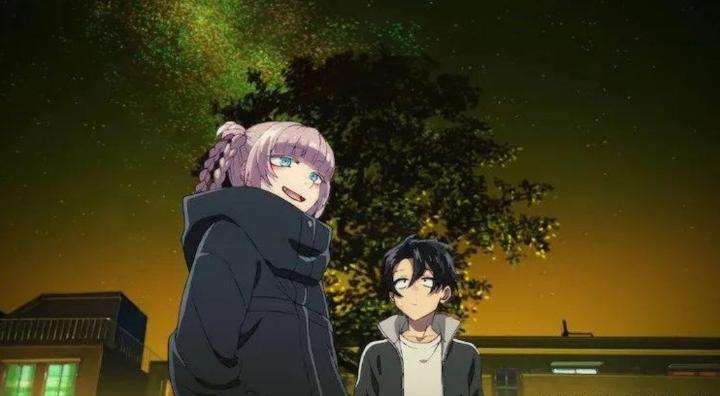

I expected the 2022 anime "Call of the Night" to be a fairly simple, mellow, slice-of-life series that happened to feature vampires. The show impressed me a lot more than that, and there's a lot to talk about. There are two novel elements that struck me: the lead character is asexual, and the relationship he has with a vampire (including the need to suck blood) is a blatant but mature metaphor for sex. To cover the premise - Ko Yamori is a 14-year old boy in high school, and feels aimless, never fully fitting in with other kids and never wanting to take part socially. A sudden love confession, which he rejects ("what's the point?" he thinks), causes him to question things, and he stops attending school. Instead, he starts wandering outside at night for the first time, and he's taken aback by how freeing it is: the city is completely different at night, and with virtually no people around, he feels at ease in a way he hadn't before. By chance, he comes across a mysterious, cool girl in a black coat: Nazuna Nanakusa, who reveals herself to be a vampire. After Ko learns that vampires can safely feed without turning humans into minions, he starts a casual relationship where the two hang out at night, and Nazuna acts as a guide to all the fun things they can do, while occasionally feeding from his neck. Ko's lack of romantic attraction to Nazuna, or other girls, is an essential part of the plot. By the rules presented in this world, a human bitten by a vampire only turns into one themselves if they've fallen in love with that vampire (perhaps explaining why so many stories of male or female vampires have elements of sexuality). Normally, a vampire would deliberately trick a human into falling for them, or if not looking to create a minion offspring, simply suck their blood dry, leading to the victim's death. Nazuna isn't particularly interested in either case, and would rather only suck the blood she needs and let victims walk away none the wiser. However, Ko becomes so enamoured with the night that he decides he WANTS to become a vampire, and through his friendship with Nazuna, wants her to be the one to do it. Nazuna isn't super keen on the idea, and since Ko has never felt love (frequently questioning what love really means or is supposed to feel like), it would take some time to occur naturally. It would be easy to say that Ko is just too young and hasn't fully "developed" through puberty yet. There are moments where he's clearly embarrassed by girls, signaling that he's straight. But at the same time, there are moments where he flatly isn't affected by other cute girls, refusing to accept others coming onto him, in favour of staying with Nazuna, either out of loyalty or trust. Personally, I choose to read Ko as being explicitly asexual here, and the show's focus on that aspect of him makes it even more blatant. In cartoons in particular, it's safe to assume all characters are asexual unless explicitly stated otherwise (opposed to assuming a default of "hetero," which is less and less a safe assumption these days), but this might be one of the only cases I can think of where it was so definitive. And it was refreshing to see, as this was one of the last examples of divergent sexuality types to not be featured in commercial media. On the other hand, Nazuna is an unusual factor. Being older than him (by some unspecified amount), their relationship feels like that of an experienced older girlfriend showing the ropes to a younger, virgin boyfriend (problematic given the boy is only 14, but we'll ignore that for a moment). That includes sex; while they never go that far, Ko is at first embarrassed when she wants him to lie down next to her in her bed, a position she's most comfortable with when sucking his blood. Human interpretations of vulgarity when it comes to sex don't bother her, and she'll make dirty jokes without restraint. And yet, she compares the intimate act of sucking blood as like "sex" to vampires, which Ko doesn't fully understand. A recurring joke is when Ko will expose his neck on the street for Nazuna to begin, and she'll react as though he pulled his pants down. The point is the "experienced woman guiding an inexperienced boy" statement is a good description of their relationship, akin to a boy wanting to understand what sex was like, and finding a trusted partner to help him, with neither being in love during the process (it either remains entirely sensual, or educational, or simply fun out of boredom). That's a bizarrely complex relationship at the heart of this "romantic-comedy-drama," and the show is surprisingly mature about it. It's rare to find an anime that conveys a "casual" partnership like this without intense love spurring it. Again, this is a breath of fresh air, a little closer to having characters that feel real instead of pure fantasy. At first, it looks as though the two leads will just casually explore the nighttime, occasionally coming across other loners at appreciate the night as much as they do. And I was totally fine with that episodic structure, as it fit a genre I liked and expected. However, it eventually introduces more exposition about the rules and cultures of vampires, adding a bit of urgency to the plot, which was even more engaging, but different. Nazuna doesn't maintain her "coolness" constantly, sometimes shifting between cool and sexy, goofy and vulgar, lazy and aloof, and sternly serious and anti-social. I'm all for multple dimensions to a character, but these tonal shifts are so different that they don't feel remotely consistent, and sometimes frustrating, a minor flaw in character writing. And while the season does have a strong ending, it also leaves a LOT of open questions to what happens next, as if the team wrote themselves into a corner. The manga the show is based on just happened to finish its last chapter in 2024, a couple years after "Call of the Night" aired, and spoiling myself revealed some major plot twists, so fingers are crossed for a second season of the anime. But the problem here, which seems to be a common complaint, is that the series changes genres on a whim. Despite that, I was fully invested each time it did. The creator of the "Call of the Night" manga also wrote "Dagashi Kashi," and has a very specific style for character design. Most notably, angular features and beady little pupils in massive eyes. It's unique, and a bit off-putting, yet oddly alluring. That comes across in Nazuna's design, with an odd smirk that highlights her fangs, sickly-pale skin, and odd fashion choice of a black bikini top and shorts under her heavy jacket. She stands out as much as a girl covered in tattoos or body piercings, with a slender body that's the complete opposite of a more "traditionally" beautiful anime girl. But when she carries herself well, she's arguably one of the sexiest characters in anime, and some scenes between her and Ko are steaming hot in a romantic way. That carries over to the ending credits, also one of the sexiest I can remember, without needing to be nearly as explicit as other shows. There's a great sense of style in these examples, especially in those opening and ending credits, and in the colour-palette of the neon-purple cityscape. It's not particularly ambitious though (this isn't as striking as 'Bakemonogatari" or "Dance in the Vampire Bund"), and the facial features from the artist might be divisive to whether the show looks "good," however well executed that style is. Animation by comparison is simply servicable. Again, it looks great in the opening and ending (sorry for mentioning that often), but the show has very little action occuring on-screen, so scenes feel static, relying on visual style rather than detailed movement. That's fine for the story, but it keeps the show from feeling elevated, compared to a throw-away show from circa 2012. Sentai Filmworks provided an English dub, aaaaand... it's not as good as the Japanese dub, despite my usual preference to go English. Ko's English actor isn't far off from his corresponding Japanese voice, but even when I got used to it, he never stopped sounding like an annoying, naive teenager. And Nazuna's a difficult role to crack, so it never quite sounded right in English, but the Japanese version pulled it off.Music is a whole topic by itself with "Call of the Night." Apparently, the creator was a fan of a rap duo called "Creepy Nuts" (stop laughing at the name), so much so that the series title was named after one of their songs. The group returned the favour, and their songs are used for the opening and ending, as well as an insert song in some of the episodes. They even get a brief cameo as animated characters in one episode. Because this is a professional group that didn't need the exposure of an anime, the quality is notably higher, and their songs are ear-worm-level catchy, with lyrics that somehow fit the show's theme of "learning to have fun like adults." If this is what we can get when anime is inspired by music, instead of the other way around, then I want to see a lot more of it. While their songs in particular is a 10.0/10.0, better than the vast majority of anime music, the rest of the composition is just an afterthought to fill in the time. I was looking forward to "Call of the Night," but didn't have major expectations of it. It knocked me with its maturity and complexity, while still being a fairly easy-going show. It's not without flaws, but its themes make it a new personal favourite in modern anime. I wish I saw this when I was 14...
- "Ani" More reviews can be found at : https://2danicritic.github.io/ Previous review: review_Calamity_-_A_Childhood_of_Martha_Jane_Cannary Next review: review_Canaan